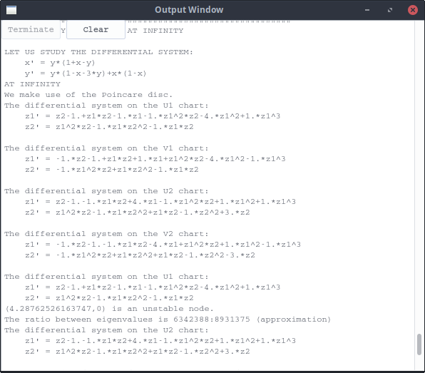
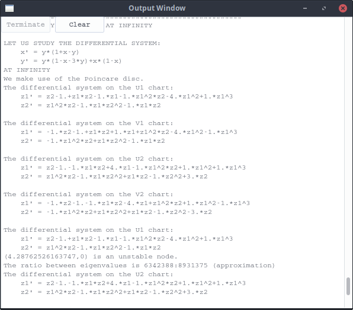
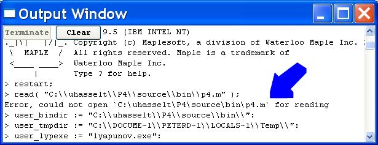
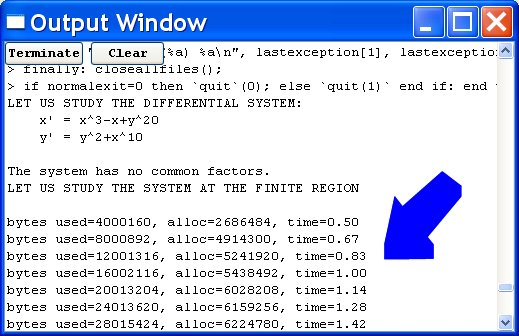
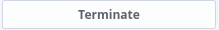

Polynomial Planar Phase Portraits
THE OUTPUT WINDOW

Polynomial Planar Phase Portraits
THE OUTPUT WINDOW

This window is automatically opened when the P4 program calls the Maple/Reduce part of P4, i.e. each time one tries to evaluate a vector field (or when one tries to plot a greatest common factor in the plot window).
One should not use this window to extract mathematical information on the vector field; use this window rather to find out if something has gone wrong, to see how long the computation has been going on, to terminate a computation that is too lengthy, etc. (To see extensive math information, use the  in the main P4 window after the computation has finished.)
in the main P4 window after the computation has finished.)
For example, to see if a computation is finished, the window could look like
 The sentence "We have finished the study of the vector field" indicates a successful study.
The sentence "We have finished the study of the vector field" indicates a successful study.
Sometimes, the program fails for a reason that is not immediately clear. One could get a window like:
 In this particular case, something went wrong with the program settings: P4 failed to start maple. Use the Settings Window to enter the settings.
In this particular case, something went wrong with the program settings: P4 failed to start maple. Use the Settings Window to enter the settings.
Also the following error is an indication that something is wrong with the P4 settings:

In this particular case, the P4 base path is chosen wrong.
Sometimes, you have mis-entered the vector field:
 You get this error when the vector field you have specified is not polynomial, when the coefficients remain unknown (most likely you have a typo-error in the names of the parameters or you have x2 somewhere instead of x^2...).
You get this error when the vector field you have specified is not polynomial, when the coefficients remain unknown (most likely you have a typo-error in the names of the parameters or you have x2 somewhere instead of x^2...).
In the last example, you can see how Maple reacts when it has a quite lengthy computation:

In this particular example, Maple is busy trying to solve for all singular points for a system of degree 20.
Buttons:
-
The  button allows one to terminate the maple session. First P4 sends a
"kill" signal to maple. Maple can then shut down nicely, or be shut down after two or three seconds. In any
case, the computation should then stop. Of course, when no computation is busy, this button will be disabled.
-
The button will erase the contents of the output window.
Note: closing the output window using the button will not terminate any
ongoing maple session.
 Back to the main page
Back to the main page
 Back to the windows page
Back to the windows page